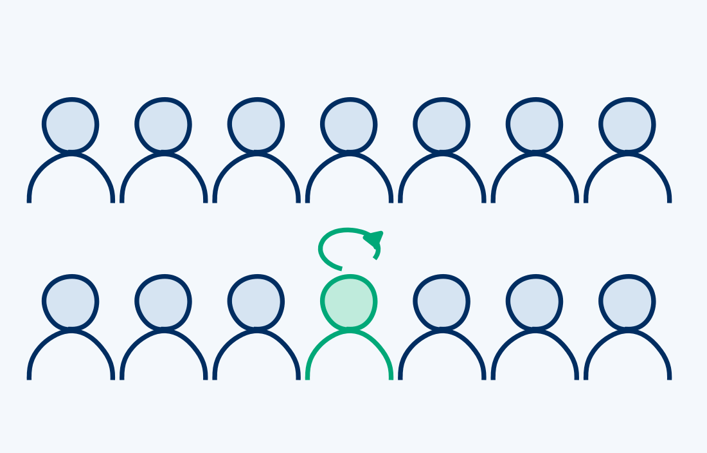
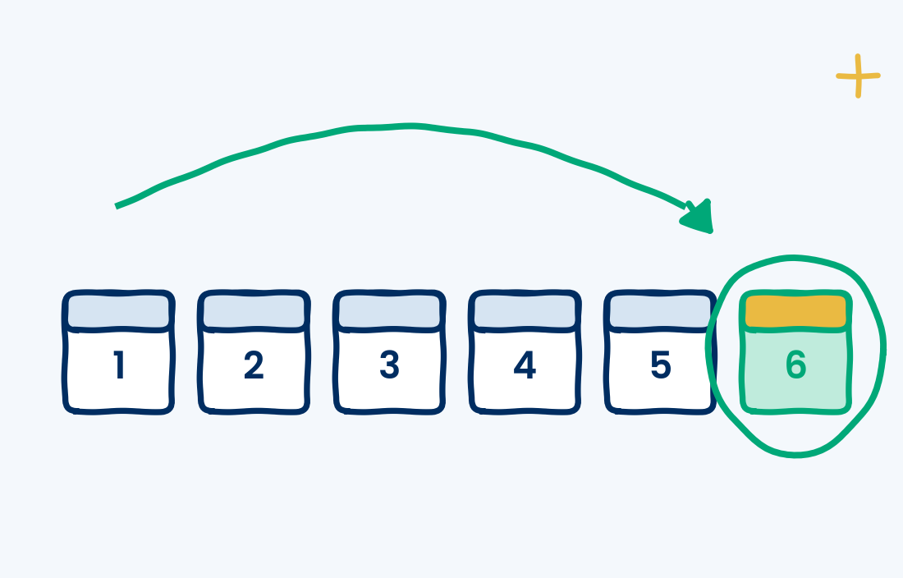
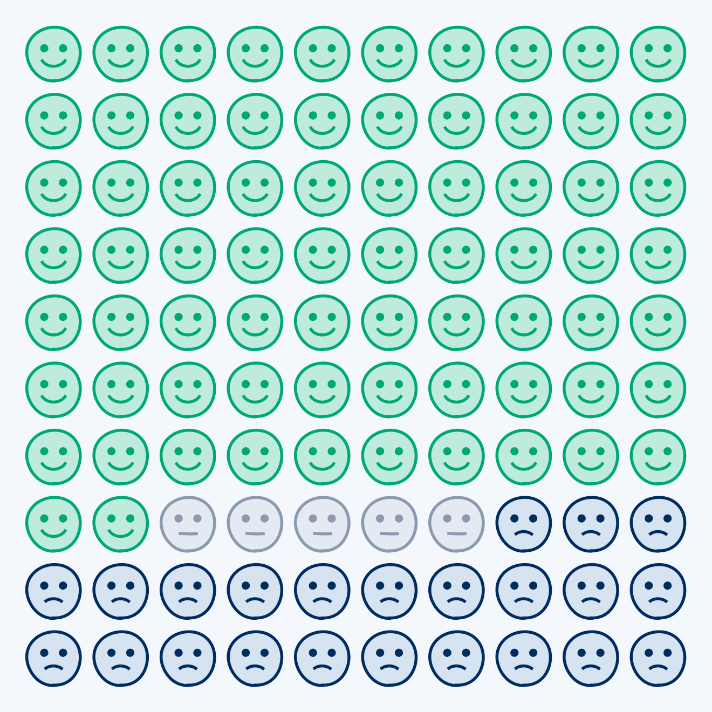
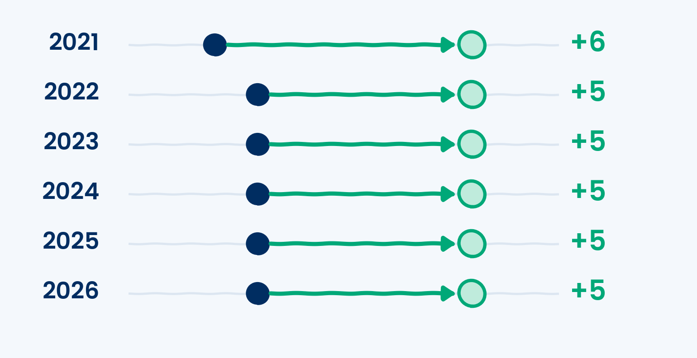

Does EQ Improve?
Yes, though it depends on the person. Most people who take the Emotional Intelligence Appraisal a second time see their scores climb, by 5 points on average, and 88% move past at least one of the behaviors they set out to work on. Below, we share what we learned from 52,614 people who retested, including what changes, what’s hardest to change, and when people retest.
What the data shows
From 52,614 people who took the assessment and then took it again between 2021–2026, here is what we discovered.

1 in 14retest
Retesting is a choice.
Year over year, about 1 in 14 people who take the assessment choose to take it again.

6months
The typical time between assessments.
57% of people retest five to seven months after their first. We recommend around six months because it takes time for a new behavior to change and become automatic, but you can retest whenever you like. 85% retest within a year.

- Score higher
- Score the same
- Score lower
72%score higher
Most people improve.
Picture 100 people who retest. 72 will score higher, 5 will score the same, and 23 will score lower.
Scored the same? Your behaviors can still change. 84% of people whose score held steady got at least one new behavior to work on.
Scored lower? A lower score can be a sign of growing self-awareness. As you learn more about emotional intelligence, you may rate yourself more honestly. About half of drops are 3 points or less.
It’s a starting point, not a sentence. The appraisal is a self-assessment. It’s a snapshot of where you are right now and a recommended place to start. Circumstances change, like a new role, a stressful season or a big life event, and your score can move with them. That’s why we call it an EQ journey. Your skills keep evolving over time.

+5points
The average gain on a retest.
Year over year, people score an average of 5 points higher on their retest than on their first assessment. Every year since 2021, the average gain has been 5 or 6 points.
The whole curve moves
This chart shows the same people’s scores on their first assessment and on their retest. The navy curve represents our normal distribution, where the median is 75. The green curve represents the retest distribution. The green curve sits to the right of the navy one, showing that scores rise across the board. The share scoring below 65 drops from 15% to 6%, and the share scoring 85 or higher more than doubles, from 14% to 31%.
- First assessment
- Retest
Behaviors change, too
Most of our assessment reports name three behaviors to work on, all from the person’s lowest-scoring skill. When people retest, most of those behaviors are no longer on their list, indicating reported behavior change. We suggest giving yourself time to work on the new behaviors, which is why we automatically remind you to retest in six months. That reminder isn’t a waiting period. If you feel you’ve adopted your new behaviors sooner, you can retest before the six-month mark, and the retest doesn’t expire, so if you need more time to practice, it will be there when you’re ready.
88%
of people move past at least one of their three behaviors by their retest. Behavior change is hard, which is why each report names just three behaviors. Focusing on one to three behaviors at a time is what makes change doable.
Social awareness is the hardest to move
Social Awareness behaviors, like reading other people’s emotions, take the longest to change. By the retest, 56% of them are off people’s lists, compared with 68–76% for the other three skills.
EQ is a skill
The Emotional Intelligence Appraisal measures skills, not fixed traits. Skills grow with practice, so a retest shows how far you’ve come and where to focus next.
“Everyone wants better results. Skill precedes results. Practice precedes skill. Attitude precedes practice. It’s the willingness to try (and keep trying) that leads to ability.”James Clear
Independent studies agree
Researchers outside TalentSmartEQ keep reaching the same conclusion. Emotional intelligence can be trained, and the gains last.
50studies
Workplace EQ training gains lasted beyond three months.
Mehler et al., 202458studies
Training has a moderate, positive effect on EQ.
Mattingly & Kraiger, 201924studies
Gains held at follow-up.
Hodzic et al., 20187years
Skills built in a graduate program were still there years later.
Boyatzis & Saatcioglu, 2008Took the appraisal six months ago or more? Retest to see how far you’ve come.
Take the assessmentTalentSmartEQ data from 52,614 people who took the Emotional Intelligence Appraisal and retested at least 30 days later, 2021–September 2026 (first self-assessment vs. first re-assessment). Gains are averages; scores are on a 0–100 scale. Low and high ranges use the same 65 and 85 cutoffs as our other research. Behaviors are the three development behaviors named on each report; “moved past” means a behavior is no longer one of the three at the retest. The retest rate is based on people who first took the assessment in 2021–2025.
Mehler, M., Balint, E., Gralla, M., Pößnecker, T., Gast, M., Hölzer, M., Kösters, M., & Gündel, H. (2024). Training emotional competencies at the workplace: A systematic review and metaanalysis. BMC Psychology, 12, 718. doi.org/10.1186/s40359-024-02198-3
Mattingly, V., & Kraiger, K. (2019). Can emotional intelligence be trained? A meta-analytical investigation. Human Resource Management Review, 29(2), 140–155. doi.org/10.1016/j.hrmr.2018.03.002
Hodzic, S., Scharfen, J., Ripoll, P., Holling, H., & Zenasni, F. (2018). How efficient are emotional intelligence trainings: A meta-analysis. Emotion Review, 10(2), 138–148. doi.org/10.1177/1754073917708613
Boyatzis, R. E., & Saatcioglu, A. (2008). A 20-year view of trying to develop emotional, social and cognitive intelligence competencies in graduate management education. Journal of Management Development, 27(1), 92–108. doi.org/10.1108/02621710810840785
Copyright 2026 © TalentSmart Inc. All rights reserved.